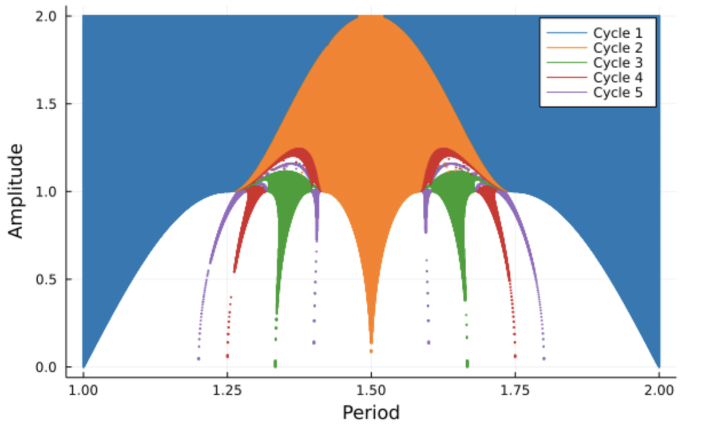
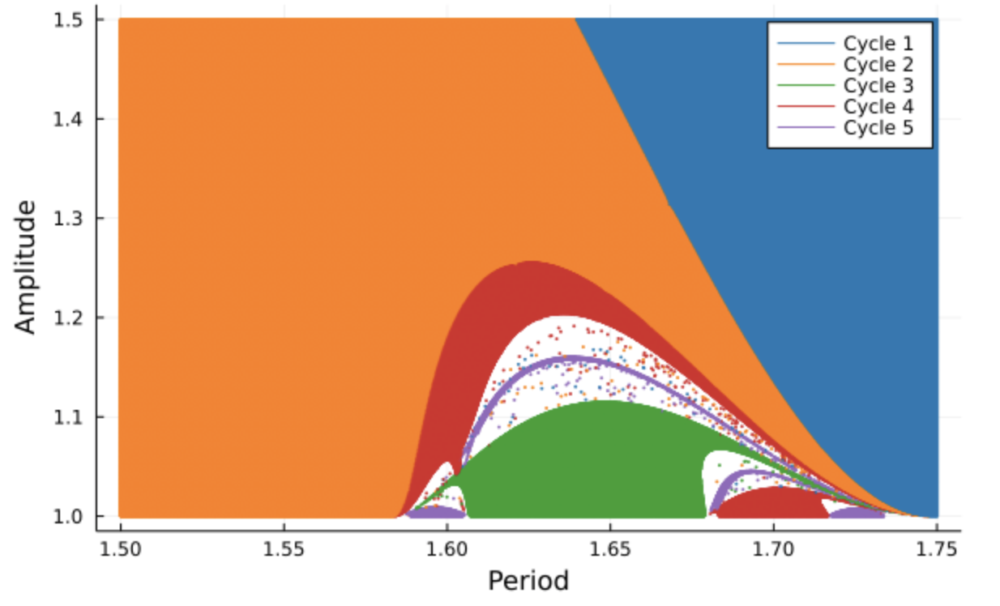

What we usually call Arnold Tongues are 2D bifurcation diagrams of some dynamical system. What I mean by bifurcation diagram is a diagram showing regions where, for a combination of parameters (say in a function), certain qualitative features of the system are present. The specifics of this might not be very clear for now, but hopefully, this changes by the end of this post. These structures are named for the Russian mathematician Vladimir Arnold. They are named "tongues" because their shape is akin to that of multiple tongues. I'll first try to give an intuitive understanding of their origin.
To get an understanding of how Arnold Tongues come about we must first talk about maps from a relatively abstract point of view. A map is essentially a rule that relates a collection of objects to some other collection. I'm sure there are some occasions in which this kind of informal definition doesn't hold up, but it'll be enough for the present discussion. So, back to the explanation: a map is a rule that relates a collection of objects (which could be numbers, symbols, words, colors, anything really) to another group of objects, which might or might not be the same collection or even type of object.
A simple example of a completely arbitrary map goes like follows: in your first collection, you have objects 1, 2, and 3. In your second collection, you have the objects: "blue", "red", and "green". Now, 1 maps to "blue", 2 maps to "green" and 3 maps to red. Any variation of this association of objects will still be a map. In this specific case, we can say that there is an inverse map that associates 1, 2, or 3 to all of the aforementioned colors (blue, red, green): 1 to "blue", 2 to "green" and 3 to red. This might not have been the case had we have decided that the map was mapping different numbers to the same color. How would one know to which number that color is associated afterward?
Another example might involve numbers and be expressed more mathematically. Let's set our first collection to be the numbers from 0 to 1 and our second collection to also be the numbers from 0 to 1. It is worth pointing out that the collections at hand here are technically infinite (since there are infinite numbers between 0 and 1). So a map could be written down as a function of the elements of the first collection:
$$ y_i = 1 - x_i $$
What the previous equation tells us is how to relate some element \( x_i \) of the first collection to some element \( y_i \) in the second collection. In this case, our two collections are the same, we then say that the map maps to itself. Just to strengthen the point, if we take the element 1 and apply the map then we get the element 0, if we take the element \( \frac{1}{3} \), we map to \( \frac{2}{3} \), or if we take the element 0.25, we map unto 0.75.
Of course, maps can become much more complicated than the examples we just described.
What is of interest to us now is this: Suppose I look at a map that maps to itself. And then, suppose I take some value A and map it unto some value B. Then I take the value B and map it to value C and keep going like this a bunch of times. We call this process map iteration, and we are interested in what happens in the limit as we keep doing this lots and lots of times. We often use the notation, to indicate that each new iteration is part of a long sequence of iteration, as follows:
$$ x_{n+1} = 1 - x_n $$
Let's first look at a somewhat boring example. Let's look at the map over the values 0 to \( +\infty \):
$$ x_{n+1} = x_n^2. $$
If you pick a number between 0 and \( +\infty \), and you iterate the map over and over again, you will get three kinds of behavior. For any values smaller than 1 the value will get closer and closer to 0. Just to help you convince yourself of this: if you pick 0.5, for instance, you will then get 0.25, then 0.0625, then 0.00390625, and so on... For values that are exactly 1, you will simply stay on 1 forever. For values greater than 1 (even ever so slightly), you will diverge towards infinity in the long run. This illustrates the idea of fixed points. In this specific case. The fixed points are 0 and 1. Where 0 is a stable fixed point and 1 is an unstable fixed point.
Now without going too much into detail. It's possible to construct not-so-complicated maps that exhibit much funkier behaviors. The classic one is the logistic map:
$$ x_{n+1} = r x_n(1 - x_n). $$
In this case, \( r \) is called a bifurcation parameter that can take any value between 0 and 4. For a given value, you can just apply the map over and over like we were doing before and look at its behavior. So, the funny thing that happens with this map is that for certain ranges of values for \( r \), we don't simply converge towards a single value, as we saw before, but it's possible to see it converge towards multiple distinct values. For a value of 3.2 for instance, the map will converge towards two specific values. A convergence towards any number of values can be obtained by varying \( r \)! When we say that the convergence arrives at multiple values, we don't mean that the function suddenly outputs multiple values at once (that would not make a lot of sense). What we mean is that in the limit behavior, the map starts repeating in a loop the same values. Had we started the iteration process on one of these convergence values, we would be going in this cyclic iteration over a bunch of values right from the start.
If this seems strange suppose the following mapping over the numbers 1, 2, 3, 4 and 5: \( 1 \to 3 \), \( 2 \to 1 \), \( 3 \to 2 \), \( 4 \to 3 \) and \( 5 \to 4 \). Here is how the process goes if we start on 5: 5, 4, 3, 2, 1, 3, 2, 1, 3, 2, 1, 3, 2, 1, 3, 2, 1... and we get a cycle-3, cyclic behavior. The same kind of thing happens, but from a continuous point of view with the logistic map.
Back to the logistic map, you can imagine a 1D segment ranging from 0 to 4 and coloring the regions with 1 point of convergence, 2 points of convergence, 3, points of convergence, and so on. That's technically a 1D bifurcation diagram in parameter space. To learn more about this specific map I would suggest watching this Veritasium Video.
We can now realize that the logistic map only has a single parameter that we can vary (\( r \)). What happens if we have a second parameter? It should be no surprise that if we can obtain that funny cyclic behavior with a single parameter, it's also possible to get a similar behavior for two parameters. The difference now is that we can't only color segments of a line, but regions in a 2D space corresponding to combinations of our two parameters. This is what the Arnold Tongues are! Surprisingly or not, their structure is quite complicated with a lot of fine detail.
One gets an Arnold Tongue diagram corresponding to a specific mapping function. Any map dependent on 2 parameters can technically be used to construct the Arnold Tongues diagram, however, depending on the map at hand, you might not see any tongue-like shapes! For more diagrams and information on these tongues, I would suggest visiting the dedicated Wikipedia Page.

The previous plot shows the Arnold Tongues for the map that comes from a periodic perturbation of the radial isochron clock. The origin of the map that was used to make this diagram is a bit more involved, so I won't talk about it in great depts here. In any case, you can see how structurally complicated the figure is. The thing that I find the most strange about this is how relatively simple the origin of the structure is. In other words: you get something complicated from something simple.

As we zoom in, we start seeing even finner details. You might be wondering what the labels of the axis mean. Well, they relate to the parameters used in the perturbation of an oscillator, and since the map comes about from this oscillator model, the parameters used are carried along. If we only look at the map that was used, then the parameters control some qualitative features of the map (how steeps are the bumps in the function used, etc.). To learn more about this specific model, you might be interested in looking into this article by Keener and Glass, that explores a variety of properties and features of the radial isochron clock.